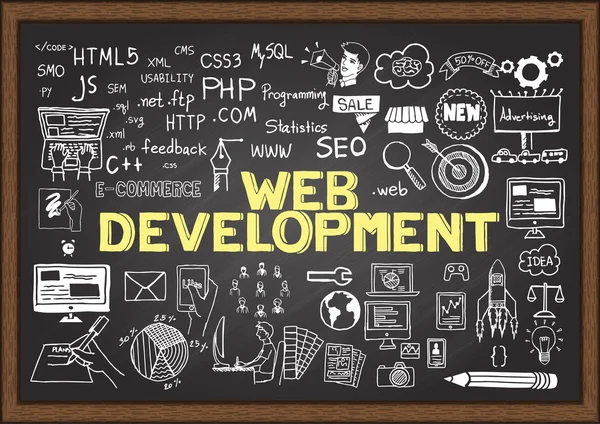

Josiah Ryan Ofosuhene
About Me
Welcome to my WDD 131 course page. I am passionate about web development and design. This course is helping me build a strong foundation in HTML, CSS, and JavaScript. I look forward to creating dynamic, accessible, and user-friendly web experiences.
Why Web Development?

The web connects billions of people across the world. Learning to build and shape that experience is both a creative and technical challenge I find deeply rewarding. My goal is to use these skills to build meaningful, impactful projects.